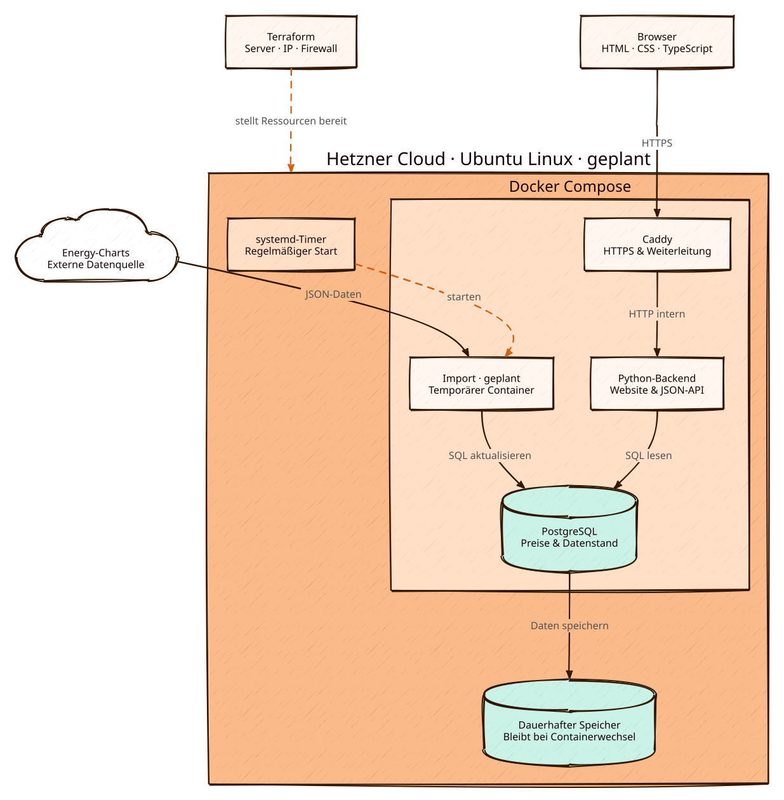
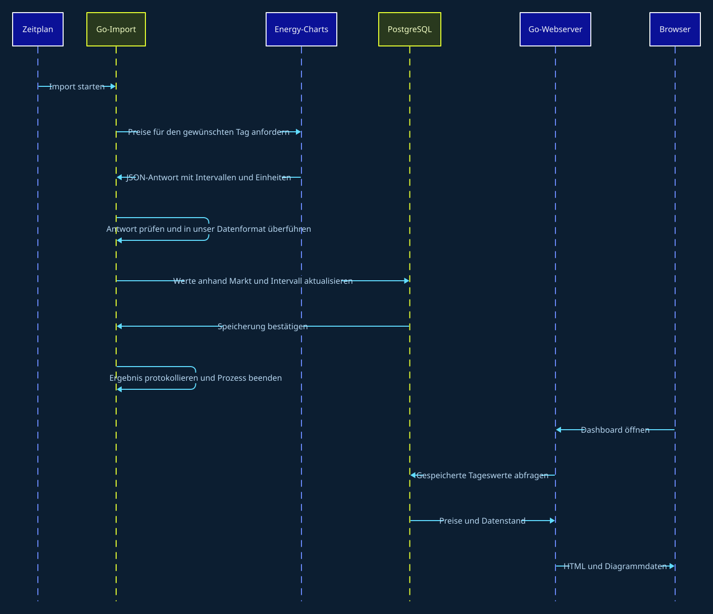
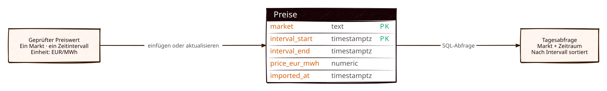

Caddy
Nimmt HTTPS-Verbindungen entgegen und leitet Anfragen an den Go-Webserver weiter.
Ein kleines Cloud-Projekt
Ein Preisverlauf. Dahinter bauen wir Schritt für Schritt eine kleine Anwendung.
Beispieltag · 31. Oktober 2026 · Deutschland–Luxemburg
Erst die Oberfläche, dann die Infrastruktur.
Die Daten sind illustrativ. Später kommen sie aus der Energy-Charts API. Börsenpreise entsprechen nicht deinem Haushaltsstrompreis.
{
"demo": true,
"date": "2026-10-31",
"unit": "EUR/MWh",
"interval": "1 hour",
"prices": [68, 63, 58, 54, 50, 55, 65, 80, 90, 76, 48, 34,
20, 12, 10, 18, 38, 63, 92, 108, 100, 87, 78, 72]
}Das Projekt, aufgeklappt
Wo die Anwendung läuft, wie ein Preiswert seinen Weg findet und wie aus einem Commit eine neue Version wird.
Geplanter Zielzustand. Die Oberfläche und diese D2-Diagramme existieren bereits. Go, Datenbank, Cloud und Deployment sind noch nicht umgesetzt.
01 · Systemarchitektur
Der Webserver und der Import nutzen dieselbe Go-Codebasis. Die einen Daten werden regelmäßig abgeholt, die anderen auf Anfrage ausgeliefert. PostgreSQL verbindet beide Abläufe.

Nimmt HTTPS-Verbindungen entgegen und leitet Anfragen an den Go-Webserver weiter.
serve liefert die Website. ingest importiert Daten und beendet sich anschließend.
Hält die Preisintervalle dauerhaft vor. Ein neuer Anwendungscontainer ersetzt diese Daten nicht.
Er hält Ressourcen, Kosten und Fehlerwege überschaubar. Für diese Portfolio-Anwendung ist das ein bewusster Startpunkt. Fällt der Server aus, fällt auch die Anwendung aus. Eine verteilte Architektur ist hier noch kein Lernziel.
02 · Ein Preiswert auf Reisen
Ein Website-Besuch startet keinen Abruf bei der Datenquelle. Der Import läuft unabhängig davon. Die Reihenfolge der Nachrichten lässt sich im Sequenzdiagramm von oben nach unten lesen.

Go fragt einen begrenzten Zeitraum ab und behandelt HTTP-Fehler, Zeitüberschreitungen und Abruflimits.
Zeitpunkte, Einheit und Werte müssen zum erwarteten Format passen. Fehlende Werte bleiben fehlend.
Markt und Intervallbeginn identifizieren einen Wert. Wiederholte Imports aktualisieren ihn, statt Duplikate anzulegen.
Go liest die Tageswerte aus PostgreSQL. Datenstand und Lücken sollen in der Oberfläche erkennbar bleiben.
Die bisherigen Daten bleiben erhalten. Der Import soll den Fehler protokollieren und bei einem späteren Lauf erneut abrufen. Die Website darf einen alten Datenstand nicht als frisch ausgeben. Ein erfolgreich gestarteter Prozess allein beweist noch keinen erfolgreichen Import.
03 · JSON hinein, SQL darunter
Die API-Antwort wird in unser eigenes Format überführt. Wir speichern Preisintervalle mit klarer Einheit und eindeutiger Identität. Der folgende Vorschlag ist noch kein implementiertes Datenbankschema.

Unser Zielformat · erfundenes Beispiel
{
"market": "DE-LU",
"interval_start": "2026-10-31T12:00:00Z",
"interval_end": "2026-10-31T12:15:00Z",
"price_eur_mwh": -12.50,
"imported_at": "2026-10-31T11:55:00Z"
}Dieses Beispiel zeigt unser vorgeschlagenes Zwischenformat, nicht die Originalantwort von Energy-Charts.
04 · Vom Commit zur Veröffentlichung
GitHub Actions prüft die Änderungen und baut das Image. Terraform beschreibt die Cloud-Ressourcen. Ein Deployment startet eine ausgewählte Version auf dem vorbereiteten Server.

TerraformServer, IP und Firewall
cloud-initErste Servereinrichtung
Docker ComposeContainer und Speicher
GitHub ActionsPrüfen und veröffentlichen
Jedes Image soll eine eindeutige Version erhalten. Bei Problemen kann ein passendes vorheriges Image erneut gestartet werden. Änderungen am Datenbankschema müssen dabei kompatibel sein; ein älteres Image allein macht eine Datenbankänderung nicht rückgängig.
05 · Wenn etwas nicht funktioniert
Strukturierte Logs sollen Beginn, Ende, Anzahl verarbeiteter Werte und Fehler eines Imports zeigen. Zugangsdaten gehören nicht in diese Ausgabe.
Ein Health-Endpunkt prüft den Webprozess. Zusätzlich müssen Datenbankverbindung und letzter erfolgreicher Import betrachtet werden.
Eine konsistente Datenbanksicherung soll getrennt vom laufenden Container aufbewahrt werden. Den Restore üben wir bewusst.
Die Website ist öffentlich, die Datenbank bleibt intern. Deployment-Zugänge und Terraform-State werden geschützt verwaltet.
Warum D2?
Jede Grafik entsteht aus einer lesbaren Textdatei. Architekturänderungen können wir gemeinsam mit dem Code prüfen. D2 zeichnet die Diagramme; es erkennt Änderungen an unserer Anwendung nicht automatisch.
D2 kennenlernen ↗